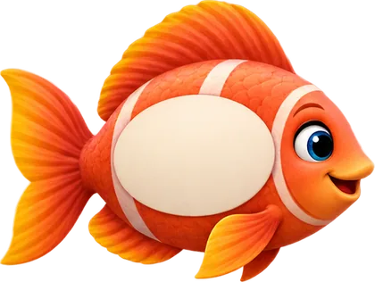

Kesir, ondalık gösterim ve yüzde aynı sayıyı farklı yazar. Eşleri bul, hazineyi topla!

Karanlık denizde büyüteçle yüzen balıkları netleştir. Kolay, orta ve zor seviye; can ve ses efektli.
 @mathpopwithru@mathpopwithru
@mathpopwithru@mathpopwithru